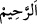

“Eğer Allah sana bir zarar” bir hastalık, sıkıntı veya fakirlik “dokundurursa, onu”
senden “yine” sadece “O’ndan başka kaldıracak yoktur. Ve eğer sana bir hayır”senin
sıhhat, rahat ve zenginliğini “dilerse, O’nun keremini de” yani sana dilediği
hayırlardan hiçbirini “geri çevirecek” kimse “yoktur.” Putlar da bu hükme dahildir.
Burada Allah’dan bir istihkak olmaksızın lütuf yoluyla hayrın Allah Teâlâ’dan geldiği
bildirilmektedir. Birbirine bağlı oldukları halde yine de ‘dileme’nin ‘hayır’ ile
‘dokunmanın’ ise ‘zarar’ ile birlikte zikredilmesi, belki de hayrın bizzat istenen bir şey
olduğu, zararın ise dokunduğu kişilere doğrudan bir kasd ile değil, bunu gerektiren
harici bir sebepler yüzünden dokunduğunu bildirmek içindir.
Allah Teâlâ, ‘dokunma’yı “O’ndan başka” buyurarak istisna ettiği halde, ‘dileme’den
istisnada bulunmamıştır. Çünkü bir şeye hayır taallukunun Allah’ın iradesiyle
gerçekleştiği farz edilmiştir. Dolayısıyla istisna, bir şeyin aynı anda zıddını irade etmesi
durumunda doğru olur. Oysa bu muhaldir. Çünkü iki irade birbirine tam ters olan iki
şeye aynı anda taalluk edemez. ‘Zarar dokunma’ fiili ise böyle değildir. Çünkü bu zararı
ortadan kaldırmayı irade etmek muhali gerektirmez.
“O, hayrını” sana dilediği hayra da başkalarına dilediği hayra da şamil olan fazlını
“kullarından dilediğine verir. O, çok bağışlayan, çok esirgeyendir.” Öyle ise itaat
ederek onun rahmetine koşun, masiyet işlemeniz sebebiyle O’nun bağışlanmasından ümit
kesmeyin.
et-Te’vîlâtü’n-Necmiyye’de şöyle denilir: “O, çok bağışlayandır” zâtının nuru ile
sıddîkların vücudunun karanlığını örter; “çok esirgeyendir” sâdık tâliblere rahmetiyle
yakınlaşır. Onların dinleri ise dünyaya ve heveslerine kulluk edip taat etmek ve bunları
sevmek değil, Allah’a kulluk ve taat etmek, Allah’ı sevip O’nu taleb etmektir.”
el-Mefâtîh’te şöyle denilir: el-Ğafur, dünyada üzerini örtmek suretiyle, ahirette ise
hesâba çekme ve cezalandırmayı terk etmek suretiyle kabahatleri ve günahları örten
demektir.
Ârifin bu isimden alacağı hisse, kendisine âit örtülmesini istediği şeyleri kardeşinden
de kapatıp örtmesidir. Hz. Peygamber (a.s.) şöyle buyurmuştur: “Bir mü’minin aybını
örten kimsenin Allah da kıyamet günü aybını örter.”[80] Gıybet eden, kusur araştıran ve
kötülüğe misliyle karşılık verenler ise bu vasıftan çok uzaktırlar. Bu vasıfla muttasıf
olanlar, Allah Teâlâ’nın yarattıklarına ancak kendilerinde bulunanın en güzelini
yayanlardır.
Rivayet edilir ki İsa (a.s.) havârileri ile birlikte çok fena kokan bir köpek leşinin
yanından geçerken havariler: “Bu leş ne kadar kötü kokuyor.” demişler. Hz. İsa (a.s.)
her şeyin güzel tarafının görülmesine dikkat çekerek: “Fakat dişleri ne kadar beyaz.”
buyurmuştur. İmam Gazzali’nin Şerhu’l-Esmai’l-hüsnâ’sında böyle geçmektedir.
(esirgeyen) ismi ile ilgili olarak Mesnevî’de şöyle denilir: